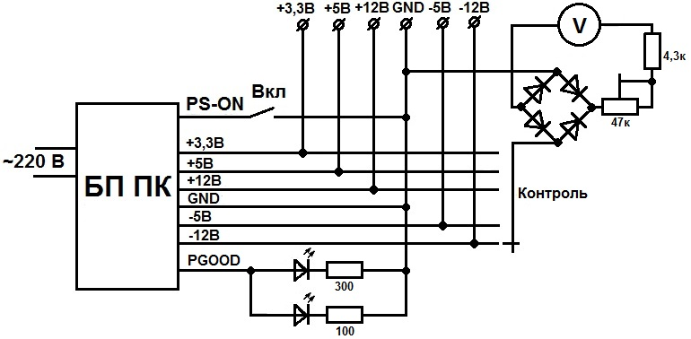
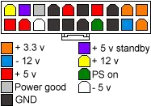

Источник питания из блока питания ПК - 5
На рис. 1 представлена схема переделки компьютерного БП в простой блок питания.

Рис. 1 - Схема переделки блока питания ПК
В разъеме компьютерного БП, который подключается к материнской плате (рис. 2), есть все необходимые напряжения. Есть служебные контакты для запуска блока и для контроля качества напряжения.

Рис. 2 - Разъем блока питания ПК для подключения к материнской плате
Для запуска БП необходимо подать низкий логический уровень на контакт PS on. После старта, если напряжения в норме, на контакте Power good появляется лог - 1, с этого контакта идет сигнал на светодиод pgood, а также на светодиод подсветки стрелочного индикатора.
Корпус самого БП для установки клемм и других элементов не очень пригоден, поэтому, лучше сделать фальшпанель. Самый простой вариант - лист стеклотекстолита: вырезаем лицевую панель, боковые стенки и припаиваем все это между собой. На тыльной стороне лицевой панели вырезаем контактные площадки, использовав ее одновременно как монтажную плату. Для лицевой панели распечатывем надписи и наклеиваем.
Стрелочный вольтметр с галетным переключателем используется для контроля выходных напряжений.